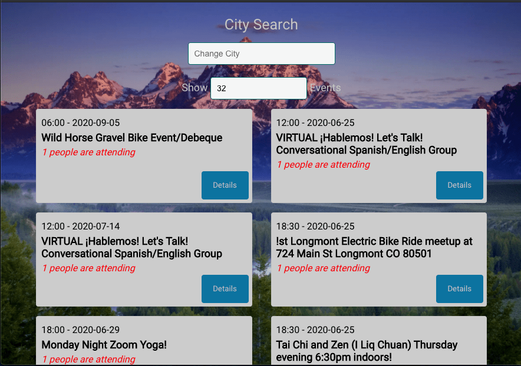

meet-em-up
React | CSS | JavaScript | OAuth2 | Jest | Serverless Programming
Check out the meetemup app | Github
The Challenge
Meet-Em-Up was designed to bring people together in an ever changing world. Today, technology has been bringing people closer together than ever before. In the recent past, technology was seen as a hastle and just another stressful addition to life in general. Now with COVID-19 technology and human connection is even more important than it ever was. Meet-Em-Up brings the user closer to the way things used to be, but digitally. Search Meet-Em-Up for groups meeting in your area, whether that be online, or in an outdoor/social-distance setting. Get back to normal. Get out there and Meet-Em-Up!
Tech Stack Explanation
This project was another, where React was the perfect candidate to complete the task. Since React is so flexible with its components features it was an easy choice to make when picking a set of build tools. Reusable components made creating this progressive web app move a little more smoothly. Use of Meetup's powerful API and Amazon Web Services made programming serverless functions to authenticate user's a breeze, while providing users with a quick and easy way to login and get meeting people faster! Whats even better, is that the use of AWS and React allow users to download the application directly to their device, and use the application offline! In a tunnel on your way to your meetup without service? No problem! The meetups viewed last are saved locally, and since users can download the app to their device, they won't need a connection to get their app open and find their way to that meetup!
The Process
As with most of my projects the process starts out with some user stories. I like to try and get a feel for what a user might want out of an application. From there we move into some basic sketched wireframes where I layout some of the basic structures that I'd like to see on the screen. Where available, references to project assets are used to compare design templates, and getting more concrete design concepts locked in place. After code is implemented, a thorough testing phase is conducted, however with this particular project, testing was conducted throughout the project using TDD and BDD mindsets. All testing was conducted both before and after code was implemented, resulting in more than a 90% test coverage rate!
Lessons Learned
I learned so much from this project in terms of coding best practices, and the importance of testing. This project was developed with both a TDD and BDD mindset. At first for a new coder, this task seemed quite daunting, however, the experience helped me grow as a developer, and as a person in general. The patience required to think ahead of the code you need to write is a skill worth developing, and well worth taking the time to continue to expand on.